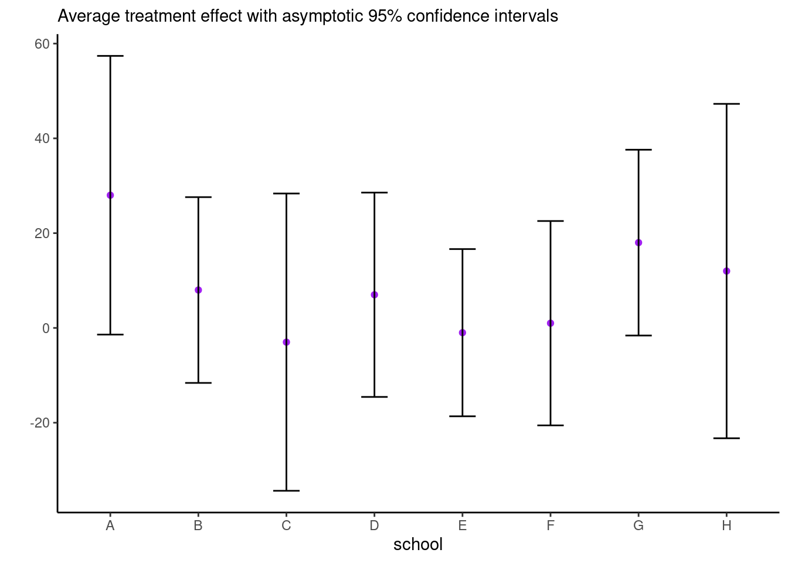
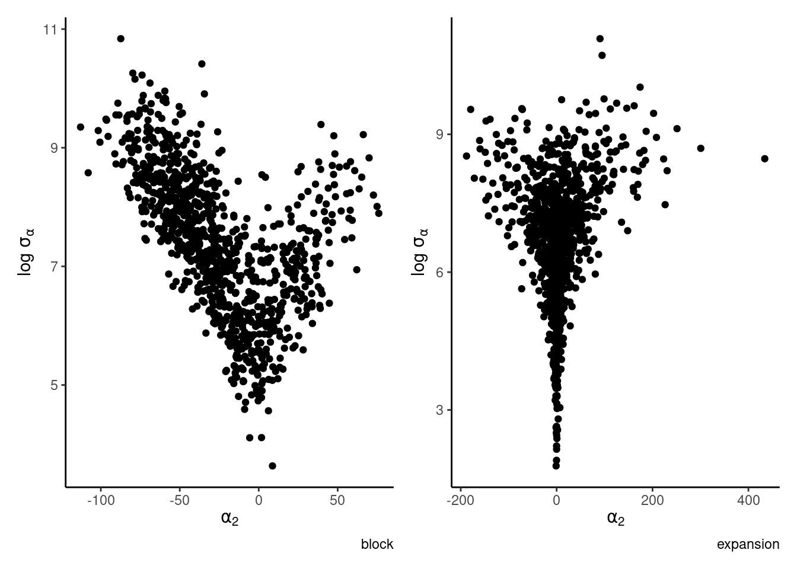
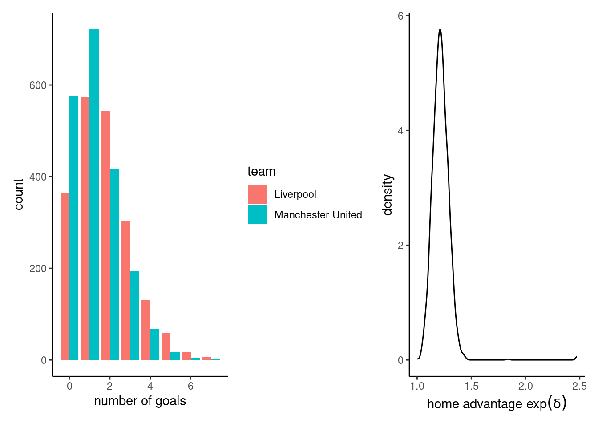

Solution 6
Exercise 6.1
Consider the eight school data from Educational Testing Service (ETS), featured prominently in Gelman et al. (2013). The data shows results of randomized experiments in eight different schools to estimate the effect of coaching on SAT-V scores. The data consist of estimated treatment mean difference and their standard errors. The data size are large, so the average treatment effect (ATE) can be considered Gaussian and the standard errors are treated as a known quantity.
Derive the Gibbs sampler for the two models with improper priors. Note that, to sample jointly from \(p(\mu, \boldsymbol{\alpha} \mid \boldsymbol{y}, \sigma^2_{\alpha}, \boldsymbol{\sigma}^2_{\boldsymbol{y}})\), you can draw from the marginal of \(\boldsymbol{\alpha}\), then the conditional \(\mu \mid \boldsymbol{\alpha}, \cdots\).
Fit the three algorithms described in Gelman et al. (2008) and compare their efficiency via effective sample size (ESS). In particular, draw traceplots and calculate effective sample sizes for
- \(\mu\)
- \(\alpha_1\),
- the sum \(\mu + \alpha_1\).
as well as pairs plot of \(\alpha_i, \log \sigma_{\alpha}\). The latter should display a very strong funnel.
Consider a one-way ANOVA with a single observation per group, where for \(i=1, \ldots, n,\) we have \[\begin{align*} Y_{i} &\sim \mathsf{Gauss}(\mu + \alpha_i, \sigma^2_i) \\ \alpha_i &\sim \mathsf{Gauss}(0, \sigma^2_\alpha) \end{align*}\] and an improper prior for the mean \(p(\mu) \propto 1.\) If there are \(K\) groups, then the group-specific mean is \(\mu+\alpha_k\), and there is a redundant parameter. In the Bayesian setting, the parameters are weakly identifiable because of the prior on \(\boldsymbol{\alpha}\), but the geometry is such that \(\alpha_k \to 0\) as \(\sigma^2_{\alpha} \to 0.\) See Section 5.5 on p. 119 of Gelman et al. (2013) for more details.
We fit the model by adding redundant parameter to improve mixing (Gelman et al., 2008) \[\begin{align*} Y_{i} &\sim \mathsf{Gauss}(\mu + \alpha\xi_i, \sigma^2_i) \\ \xi_i &\sim \mathsf{Gauss}(0, \sigma^2_\xi) \end{align*}\] so that \(\sigma_\alpha = |\alpha|\sigma_\xi.\)
See this post for display of the pathological behaviour that can be captured by divergence in Hamiltonian Monte Carlo.
Solution.
# Eight school data
es <- data.frame(school = LETTERS[1:8],
y = c(28, 8, -3, 7, -1, 1, 18, 12),
se = c(15, 10, 16, 11, 9, 11, 10, 18))
n <- nrow(es)
B <- 1e3L
set.seed(80601)
# Starting values
alpha <- rnorm(0, sd = 0.01)
mu <- mean(es$y)
sigma_al <- sqrt(var(es$y) - mean(es$se))
pars1 <- matrix(NA, nrow = B, ncol = n + 2)
var_mu <- 1/sum(1/es$se^2)
for(b in seq_len(B)){
var_al <- 1/(1/es$se^2 + 1/sigma_al^2)
pars1[b, 1:n] <- alpha <- rnorm(n = n, mean = var_al * (es$y - mu)/es$se^2, sd = sqrt(var_al))
pars1[b, n + 1] <- mu <- rnorm(n = 1, mean = var_mu * sum((es$y - alpha)/es$se^2), sd = sqrt(var_mu))
pars1[b, n + 2] <- sigma_al <- sum(alpha^2) / rchisq(1, df = n - 1)
}
## Sampler 2
# Same model, with joint updates
set.seed(80601)
# Starting values
alpha <- rnorm(0, sd = 0.01)
mu <- mean(es$y)
sigma_al <- sqrt(var(es$y) - mean(es$se))
pars2 <- matrix(NA, nrow = B, ncol = n + 2)
for(b in seq_len(B)){
var_al <- 1/(1/es$se^2 + 1/sigma_al^2)
# Sample from joint of alpha, mu
# by taking p(alpha | sigma_al, y) * p(mu | alpha, sigma_al, y)
pars2[b, 1:n] <- alpha <- rnorm(n = n, mean = var_al * es$y/es$se^2, sd = sqrt(var_al))
pars2[b, n + 1] <- mu <- rnorm(n = 1, mean = var_mu * sum((es$y - alpha)/es$se^2), sd = sqrt(var_mu))
pars2[b, n + 2] <- sigma_al <- sum(alpha^2) / rchisq(1, df = n - 1)
}
# Parameter expansion - V+PX sampler
a <- 1
pars3 <- matrix(NA, nrow = B, ncol = n + 3)
for(b in seq_len(B)){
var_al <- 1/(1/es$se^2 + 1/sigma_al^2)
# Sample from joint of alpha, mu
# by taking p(alpha | sigma_al, y) * p(mu | alpha, sigma_al, y)
alpha_st <- rnorm(n = n, mean = var_al * es$y/es$se^2, sd = sqrt(var_al))
pars3[b, n + 1] <- mu <- rnorm(n = 1, mean = var_mu * sum((es$y - alpha)/es$se^2), sd = sqrt(var_mu))
pars3[b, n + 2] <- sigma_al_st <- sum(alpha_st^2) / rchisq(1, df = n - 1)
pars3[b, n + 3] <- a <- rnorm(n = 1, mean = sum(alpha_st*(es$y-mu)/es$se^2)/sum(alpha_st^2/es$se^2),
sd = sum(alpha_st^2/es$se^2))
pars3[b, 1:n] <- alpha_st*a
pars3[b, n + 2] <- sigma_al <- abs(a)*sigma_al_st
}We can write the joint density of \(\mu\) and \(\boldsymbol{\alpha}\) and integrate out \(\mu\). The precision for \(\alpha_j\) is \(Q_{\alpha_j} = 1/\sigma^2_j + 1/\sigma_{\alpha}^2\), and the unconditional mean of \(p(\alpha_j \mid \sigma_{\alpha})\) is \(Q^{-1}_{\alpha_j}y_j/\sigma^2_j\). The conditional distribution \(p(\mu, \mid \boldsymbol{\alpha}, \sigma_{\alpha})\) is Gaussian with precision \(Q_{\mu} = \sum_{j=1}^{8} \sigma^{-2}_j\) and mean \(Q_{\mu}^{-1}\sum_{j=1}^8 \sigma^{-2}_j(y_j-\alpha_j).\) The other steps are detailed in Gelman et al. (2008).
# Compare trace plots for mu + alpha
plot(pars1[, 2] + pars1[, n+1])plot(pars1[, 2])# Funnel behaviour
ggplot(
data = data.frame(
beta2 = c(pars1[,2], pars3[,2]),
sigma = c(pars1[,n+2], pars3[,n+2]),
parametrization = rep(c("block","expansion"), each = B)),
mapping = aes(x = beta2, y = log(sigma), color = parametrization)) +
geom_point() +
scale_color_grey() +
labs(x = expression(alpha[2]), y = expression("log"~sigma[alpha])) 
Exercise 6.2
Let \(Y_{ij1}\) (\(Y_{ij2}\)) denote the score of the home (respectively visitor) team for a soccer match opposing teams \(i\) and \(j\). Maher (1982) suggested modelling the scores as \[\begin{align*} Y_{ij1} \mid \delta, \alpha_i, \beta_j &\sim \mathsf{Poisson}\{\exp(\delta + \alpha_i +\beta_j)\}, \\ Y_{ij2} \mid \delta, \alpha_j, \beta_i &\sim \mathsf{Poisson}\{\exp(\alpha_j+\beta_i)\}, \end{align*}\] where
- \(\alpha_i\) represent the offensive strength of the team,
- \(\beta_j\) the defensive strength of team \(j\) and
- \(\delta\) is the common home advantage.
The scores in a match and between matches are assumed to be conditionally independent of one another given \(\boldsymbol{\alpha}, \boldsymbol{\beta}, \delta\). The data set efl contains the results of football (soccer) matches for the 20232-2024 season of the English Football Ligue (EFL) and contains the following variables
score: number of goals ofteamduring a matchteam: categorical variable giving the name of the team which scored the goalsopponent: categorical variable giving the name of the adversaryhome: binary variable, 1 ifteamis playing at home, 0 otherwise.
- Specify suitable priors for the regression parameters that shrink \(\alpha_i\) and \(\beta_j\) to zero.
- Fit the model:
- Using the posterior distribution, give the expected number of goals for a match between Manchester United (at home) against Liverpool.
- Report and interpret the estimated posterior mean home advantage \(\widehat{\delta}\).
- Calculate the probability that the home advantage \(\delta\) is positive?
- Comment on the adequacy of the fit by using a suitable statistic for the model fit (e.g. the deviance statistic
- Maher also suggested more complex models, including one in which the offensive and defensive strength of each team changed depending on whether they were at home or visiting another team, i.e. \[\begin{align} Y_{ij1} \sim \mathsf{Poisson}\{\exp(\alpha_i +\beta_j + \delta)\}, Y_{ij2} \sim \mathsf{Poisson}\{\exp(\gamma_j+\omega_i)\}, \end{align}\] Does the second model fit significantly better than than the first? Compare the models using WAIC and Bayes factors.
Solution. We use the brms package to generate Stan code following R syntax. Model 1 can be fit by adding random effects for team and opponent. These are assigned penalized complexity priors for the scale such that their 0.99 quantile is 1, giving \(1-\exp(-\lambda_0) = 0.99\) and thus \(\lambda_0=-\log (0.01).\)
data(efl, package = "hecbayes")
# Model 1
fit_brms1 <- brms::brm(formula = score ~ home + (1 | team) + (1 | opponent),
data = efl,
prior = c(
set_prior("normal(0, 10)", class = "b", coef = "home"),
set_prior("exponential(4.605)", class = "sd", group = "team"),
set_prior("exponential(4.605)", class = "sd", group = "opponent")
),
family = poisson,
silent = 0,
save_model = "Maher1.stan")Compiling Stan program...Start sampling
SAMPLING FOR MODEL 'anon_model' NOW (CHAIN 1).
Chain 1:
Chain 1: Gradient evaluation took 0.000141 seconds
Chain 1: 1000 transitions using 10 leapfrog steps per transition would take 1.41 seconds.
Chain 1: Adjust your expectations accordingly!
Chain 1:
Chain 1:
Chain 1: Iteration: 1 / 2000 [ 0%] (Warmup)
Chain 1: Iteration: 200 / 2000 [ 10%] (Warmup)
Chain 1: Iteration: 400 / 2000 [ 20%] (Warmup)
Chain 1: Iteration: 600 / 2000 [ 30%] (Warmup)
Chain 1: Iteration: 800 / 2000 [ 40%] (Warmup)
Chain 1: Iteration: 1000 / 2000 [ 50%] (Warmup)
Chain 1: Iteration: 1001 / 2000 [ 50%] (Sampling)
Chain 1: Iteration: 1200 / 2000 [ 60%] (Sampling)
Chain 1: Iteration: 1400 / 2000 [ 70%] (Sampling)
Chain 1: Iteration: 1600 / 2000 [ 80%] (Sampling)
Chain 1: Iteration: 1800 / 2000 [ 90%] (Sampling)
Chain 1: Iteration: 2000 / 2000 [100%] (Sampling)
Chain 1:
Chain 1: Elapsed Time: 2.475 seconds (Warm-up)
Chain 1: 1.589 seconds (Sampling)
Chain 1: 4.064 seconds (Total)
Chain 1:
SAMPLING FOR MODEL 'anon_model' NOW (CHAIN 2).
Chain 2:
Chain 2: Gradient evaluation took 9.8e-05 seconds
Chain 2: 1000 transitions using 10 leapfrog steps per transition would take 0.98 seconds.
Chain 2: Adjust your expectations accordingly!
Chain 2:
Chain 2:
Chain 2: Iteration: 1 / 2000 [ 0%] (Warmup)
Chain 2: Iteration: 200 / 2000 [ 10%] (Warmup)
Chain 2: Iteration: 400 / 2000 [ 20%] (Warmup)
Chain 2: Iteration: 600 / 2000 [ 30%] (Warmup)
Chain 2: Iteration: 800 / 2000 [ 40%] (Warmup)
Chain 2: Iteration: 1000 / 2000 [ 50%] (Warmup)
Chain 2: Iteration: 1001 / 2000 [ 50%] (Sampling)
Chain 2: Iteration: 1200 / 2000 [ 60%] (Sampling)
Chain 2: Iteration: 1400 / 2000 [ 70%] (Sampling)
Chain 2: Iteration: 1600 / 2000 [ 80%] (Sampling)
Chain 2: Iteration: 1800 / 2000 [ 90%] (Sampling)
Chain 2: Iteration: 2000 / 2000 [100%] (Sampling)
Chain 2:
Chain 2: Elapsed Time: 1.887 seconds (Warm-up)
Chain 2: 1.303 seconds (Sampling)
Chain 2: 3.19 seconds (Total)
Chain 2:
SAMPLING FOR MODEL 'anon_model' NOW (CHAIN 3).
Chain 3:
Chain 3: Gradient evaluation took 8.9e-05 seconds
Chain 3: 1000 transitions using 10 leapfrog steps per transition would take 0.89 seconds.
Chain 3: Adjust your expectations accordingly!
Chain 3:
Chain 3:
Chain 3: Iteration: 1 / 2000 [ 0%] (Warmup)
Chain 3: Iteration: 200 / 2000 [ 10%] (Warmup)
Chain 3: Iteration: 400 / 2000 [ 20%] (Warmup)
Chain 3: Iteration: 600 / 2000 [ 30%] (Warmup)
Chain 3: Iteration: 800 / 2000 [ 40%] (Warmup)
Chain 3: Iteration: 1000 / 2000 [ 50%] (Warmup)
Chain 3: Iteration: 1001 / 2000 [ 50%] (Sampling)
Chain 3: Iteration: 1200 / 2000 [ 60%] (Sampling)
Chain 3: Iteration: 1400 / 2000 [ 70%] (Sampling)
Chain 3: Iteration: 1600 / 2000 [ 80%] (Sampling)
Chain 3: Iteration: 1800 / 2000 [ 90%] (Sampling)
Chain 3: Iteration: 2000 / 2000 [100%] (Sampling)
Chain 3:
Chain 3: Elapsed Time: 1.829 seconds (Warm-up)
Chain 3: 1.235 seconds (Sampling)
Chain 3: 3.064 seconds (Total)
Chain 3:
SAMPLING FOR MODEL 'anon_model' NOW (CHAIN 4).
Chain 4:
Chain 4: Gradient evaluation took 7.8e-05 seconds
Chain 4: 1000 transitions using 10 leapfrog steps per transition would take 0.78 seconds.
Chain 4: Adjust your expectations accordingly!
Chain 4:
Chain 4:
Chain 4: Iteration: 1 / 2000 [ 0%] (Warmup)
Chain 4: Iteration: 200 / 2000 [ 10%] (Warmup)
Chain 4: Iteration: 400 / 2000 [ 20%] (Warmup)
Chain 4: Iteration: 600 / 2000 [ 30%] (Warmup)
Chain 4: Iteration: 800 / 2000 [ 40%] (Warmup)
Chain 4: Iteration: 1000 / 2000 [ 50%] (Warmup)
Chain 4: Iteration: 1001 / 2000 [ 50%] (Sampling)
Chain 4: Iteration: 1200 / 2000 [ 60%] (Sampling)
Chain 4: Iteration: 1400 / 2000 [ 70%] (Sampling)
Chain 4: Iteration: 1600 / 2000 [ 80%] (Sampling)
Chain 4: Iteration: 1800 / 2000 [ 90%] (Sampling)
Chain 4: Iteration: 2000 / 2000 [100%] (Sampling)
Chain 4:
Chain 4: Elapsed Time: 1.755 seconds (Warm-up)
Chain 4: 1.23 seconds (Sampling)
Chain 4: 2.985 seconds (Total)
Chain 4: summary(fit_brms1) Family: poisson
Links: mu = log
Formula: score ~ home + (1 | team) + (1 | opponent)
Data: efl (Number of observations: 760)
Draws: 4 chains, each with iter = 2000; warmup = 1000; thin = 1;
total post-warmup draws = 4000
Multilevel Hyperparameters:
~opponent (Number of levels: 20)
Estimate Est.Error l-95% CI u-95% CI Rhat Bulk_ESS Tail_ESS
sd(Intercept) 0.24 0.05 0.15 0.36 1.00 1521 2414
~team (Number of levels: 20)
Estimate Est.Error l-95% CI u-95% CI Rhat Bulk_ESS Tail_ESS
sd(Intercept) 0.25 0.05 0.16 0.36 1.00 1627 2333
Regression Coefficients:
Estimate Est.Error l-95% CI u-95% CI Rhat Bulk_ESS Tail_ESS
Intercept 0.34 0.09 0.15 0.51 1.00 1610 1759
home 0.20 0.06 0.09 0.31 1.00 6890 2708
Draws were sampled using sampling(NUTS). For each parameter, Bulk_ESS
and Tail_ESS are effective sample size measures, and Rhat is the potential
scale reduction factor on split chains (at convergence, Rhat = 1).# Use S3 generic for prediction, with new data frame
predict(fit_brms1, newdata = data.frame(home = 1, team = "Man Utd", opponent = "Liverpool")) Estimate Est.Error Q2.5 Q97.5
[1,] 1.27025 1.142603 0 4# Manual prediction from posterior predictive
# 1) extract simulations
sims <- fit_brms1$fit@sim$samples[[1]]
nsim <- length(sims[[1]])
# 2) calculate the posterior mean for the match for each team (Poisson with log link)
post_mean1 <- exp(sims$b_Intercept + sims$b_home + sims$`r_opponent[Liverpool,Intercept]` + sims$`r_team[Man.Utd,Intercept]`)
post_mean2 <- exp(sims$b_Intercept + sims$`r_team[Liverpool,Intercept]` + sims$`r_opponent[Man.Utd,Intercept]`)
# 3) generate the number of goals from the posterior predictive
post_pred1 <- rpois(n = nsim, lambda = post_mean1)
post_pred2 <- rpois(n = nsim, lambda = post_mean2)
# Plot the posterior predictive (bar plot)
g1 <- ggplot(data = data.frame(x = c(post_pred1, post_pred2),
team = rep(c("Manchester United", "Liverpool"), each = nsim)),
aes(x = x, fill = team)) +
geom_bar(position = position_dodge()) +
labs(x = "number of goals")
g2 <- ggplot(data = data.frame(delta = exp(sims$b_home)),
mapping = aes(x = delta)) +
geom_density() +
labs(x = expression("home advantage"~exp(delta)))
g1 + g2
Model 2
fit_brms2 <- brms::brm(formula = score ~ home + (1 | team) + (1 | opponent), data = efl, prior = c( set_prior(“normal(0, 10)”, class = “b”, coef = “home”), set_prior(“exponential(4.605)”, class = “sd”, group = “team”), set_prior(“exponential(4.605)”, class = “sd”, group = “opponent”) ), family = poisson, save_model = “Maher2.stan”) summary(fit_brms2)
waic(fit_brms1); waic(fit_brms2)
We can also fit the model using integrated nested Laplace approximations.
::: {.cell}
```{.r .cell-code}
library(INLA)
# Default prior for random effects
# inla.models()$latent$iid$hyper$theta
prec_prior <- list(theta = list(prior = "pc.prec", param = c(1, 0.01)))
fit_inla <- INLA::inla(
score ~ home + f(team, model = "iid", hyper = prec_prior) +
f(opponent, model = "iid", hyper = prec_prior),
family = "poisson",
data = efl)
marg_delta <- fit_inla$marginals.fixed[[2]]
inla.pmarginal(q = 0, marginal = inla.smarginal(marg_delta))[1] 0.0002693049ggplot(data = data.frame(inla.smarginal(marg_delta)), mapping = aes(x = x, y = y)) +
geom_line() +
labs(x = expression(delta), y = "", subtitle = "Marginal density of home advantage") +
theme_classic():::
Exercise 6.3
The 2000 US presidential election opposed Georges W. Bush (GOP) and Albert A. Gore (Democrat), as well as marginal third party candidates. The tipping state was Florida, worth 25 electors, which Bush won by a narrow margin of 537 votes. There have been many claims that the design of so-called butterfly ballot used in poor neighborhoods of Palm Beach county led to confusion among voters and that this deprived Gore of some thousands of votes that were instead assigned to a paleoconservative third-party candidate, Patrick Buchanan (Reform). Smith (2002) analysed the election results in Palm Beach country, in which a unusually high number of ballots (3407) were cast for Buchanan.
{kind=link}
We are interested in building a model to predict the expected number of votes for Buchanan in Palm Beach county, based only on the information from other county votes. The data set buchanan contains sociodemographic information and votes per county of different candidates.
- Plot the percentage of votes obtained by Buchanan,
buch/(buch+totmb), against \(\log\)popnand comment. - Fit a binomial logistic model for the votes of Bush versus Gore with \(\log\)
popn,black,hisp,geq65highscas covariates.- Interpret the estimated coefficients \(\widehat{\boldsymbol{\beta}}\) for
highscandhispon the odds scale. - Calculate the total posterior proportion of votes for Buchanan in Florida.
- Interpret the estimated coefficients \(\widehat{\boldsymbol{\beta}}\) for
- Look at the posterior predictive checks and leave-one-out probability plot. Is there evidence of overdispersion? Consider how to account for the latter and compare the model with a beta-binomial regression.
- Rerun the model excluding the results of Palm Beach county and predict the expected number of Buchanan votes in Palm Beach county. Comment hence on the discrepancy between this forecast and the number of votes received in the election.
References
Gelman, A., Carlin, J. B., Stern, H. S., Dunson, D. B., Vehtari, A., & Rubin, D. B. (2013). Bayesian data analysis (3rd ed.). Chapman; Hall/CRC. https://doi.org/10.1201/b16018
Gelman, A., Dyk, D. A. van, Huang, Z., & Boscardin, J. W. (2008). Using redundant parameterizations to fit hierarchical models. Journal of Computational and Graphical Statistics, 17(1), 95–122. https://doi.org/10.1198/106186008x287337
Maher, M. J. (1982). Modelling association football scores. Statistica Neerlandica, 36(3), 109–118. https://doi.org/10.1111/j.1467-9574.1982.tb00782.x
Smith, R. L. (2002). A statistical assessment of Buchanan’s vote in Palm Beach County. Statistical Science, 17(4), 441–457. https://doi.org/10.1214/ss/1049993203